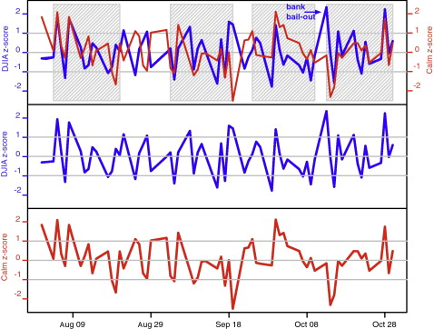
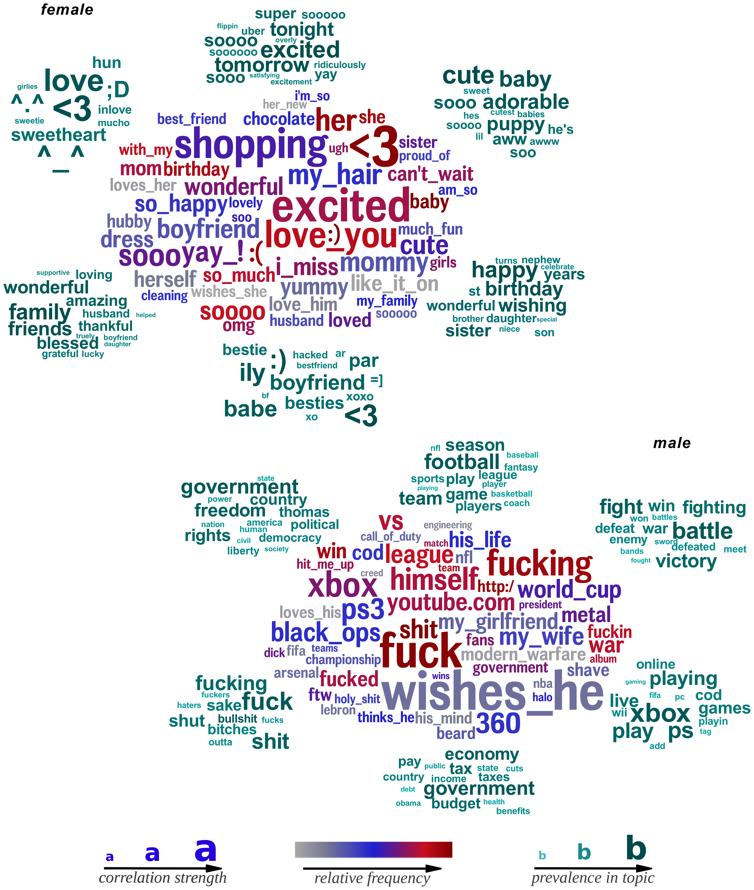

Content & Data Mining Research Topics in Social Science
Dr. Alexander O'Connor


David Lazet et. al. Life in the network: the coming age of computational social science Science. 2009 Feb 6; 323(5915): 721–723.
Social Sciences are a quest to understand the factors that motivate human action and interaction, collectively and individually. It has been fundamentally changed by the abilit to mine massive data, but critical transparency, ethical and openness challenges are revealed in this process of discovery which must be addressed.
- Surprise should be possible
- Look for the difference that makes the difference
- Build in reality checks
- Replicate
- Compare like with like
- Study change
- Let the method be the servant
Firebaugh, Glenn. Seven Rules for Social Research.Princeton: Princeton UP, 2008.
Evidence
Markus Strohmaier and Claudia Wagner Computational Social Science IEEE Intelligent Systems, September/October 2014
Traces of Human Activity: Mining Social Media
 Fig 1.: Bollen, Johan et. al Twitter Mood
Predicts the Stock Market Journal of Computational Science
2-1
Fig. 2: Schwartz, H. Andrew, et al. Personality, gender, and age in the language of social media: The open-vocabulary approach. PloS one 8.9 (2013): e73791.
Mining Facebook to understand gender, mining language change in twitter, understanding how people react to disease, crisis and how rumours disseminate
- Information Quality
- Ethics & Privacy
- Validity & Reliability
- Representative Sample
- Feasibility
Ahmed, W. and Bath, P.A. (2015) The Ebola epidemic on Twitter: challenges for health informatics. In: Proceedings of;. 17th International Symposium on Health Information Management Research – ISHIMR 2015, York, UK, 25-26 June 2015
Thought you would
↑ vs. ↓
Let's Discuss
Gilbert, Eric. "Phrases that signal workplace hierarchy." Proceedings of the ACM 2012 conference on Computer Supported Cooperative Work. ACM, 2012.
Kemman, Max; Aggelen, Astrid van (2014): Talk of Europe - Linking European Parliament Proceedings
An interesting place where 'found' data has been used extensively in social science has been in that data which has been published by Governments, including open data portals, but also of high interest has been data that has been released as part of judicial inquiries or freedom of information. An example of this is the enron email data set, which has been the source of a vast number of studies. Similarly, a huge amount of valuable work has been achieved on the proceedings of the European Parliament. For example, the Talk of Europe Project which publishes a high-quality linked open data version of the proceedings, helping users access information by topic, country and other categories.
The Impact of openness and availability cannot be overstated. This alone is some evidence of the fundamental importance of the Europarl data set, which is the cornerstone of a vast amount of computational linguistic research, especially cross-lingually. A fundamental reason for why it has such impact and such value is undoubtedly the fact that it is free, open, and high quality. This means that the refined, curated data can be shared, rather than the raw set.

John Bohannon Social Science for
Pennies Science vol.334 (2011)
Paolacci, Gabriele, Jesse Chandler, and
Panagiotis G. Ipeirotis. Running experiments on amazon
mechanical turk. Judgment and Decision making 5.5 (2010):
411-419.
In just a few weeks, Lenz had all the data his group needed. In spite of the cultural differences, the snap-judgment effect persisted: American and Indian subjects predicted the winners of Brazilian political races based on nothing more than a mug shot.
In very specific situations, it can be effectively illegal under UK law to conduct a replication study
Pete Etchells Replication frustration: what stops experiments being reliably repeated? The Guardian, 16 October, 2015
Studies at Massive Scale
Source: eMunicipality